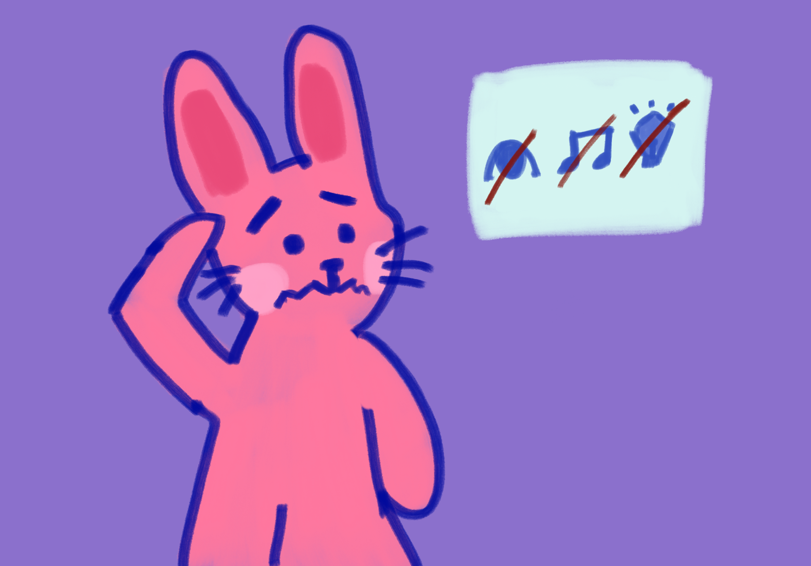
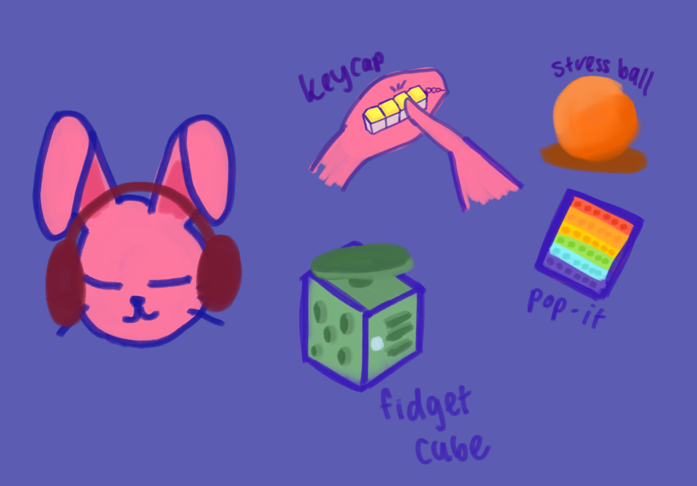
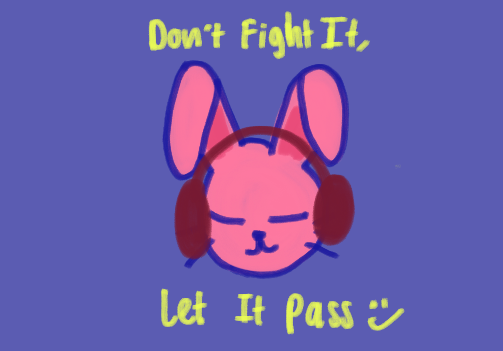
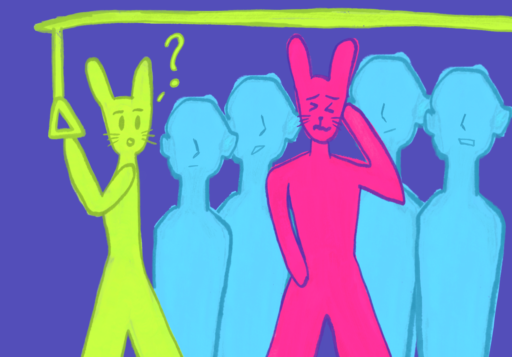
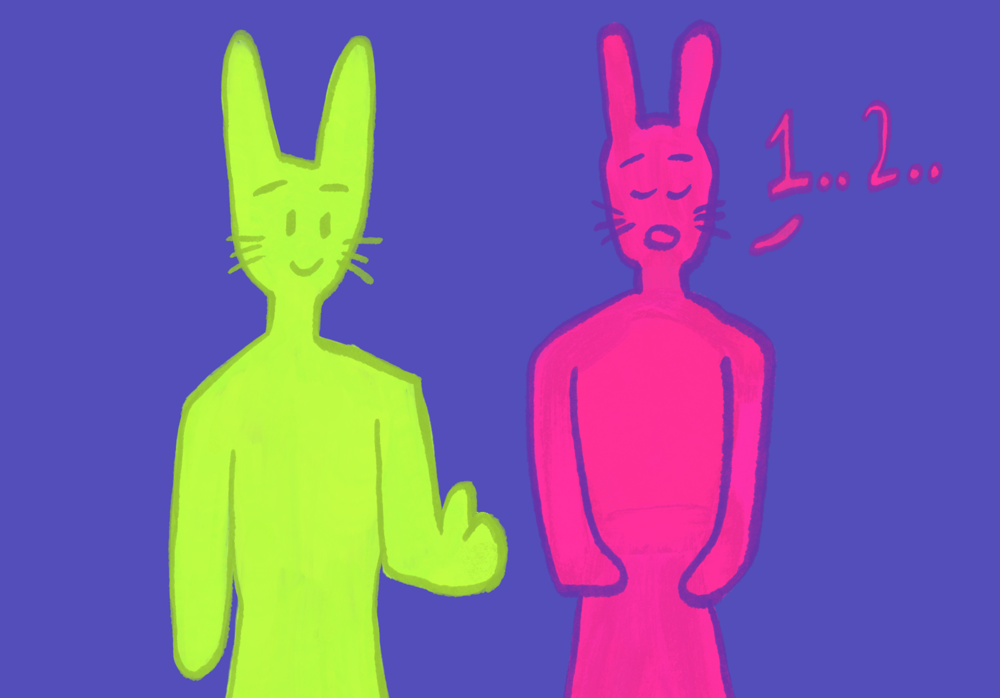
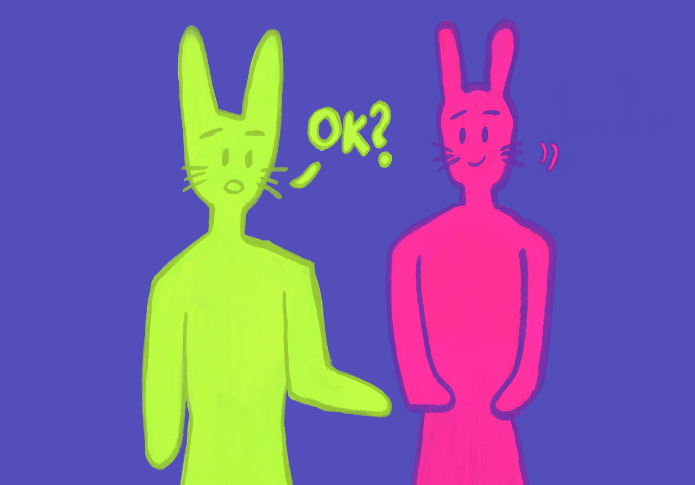
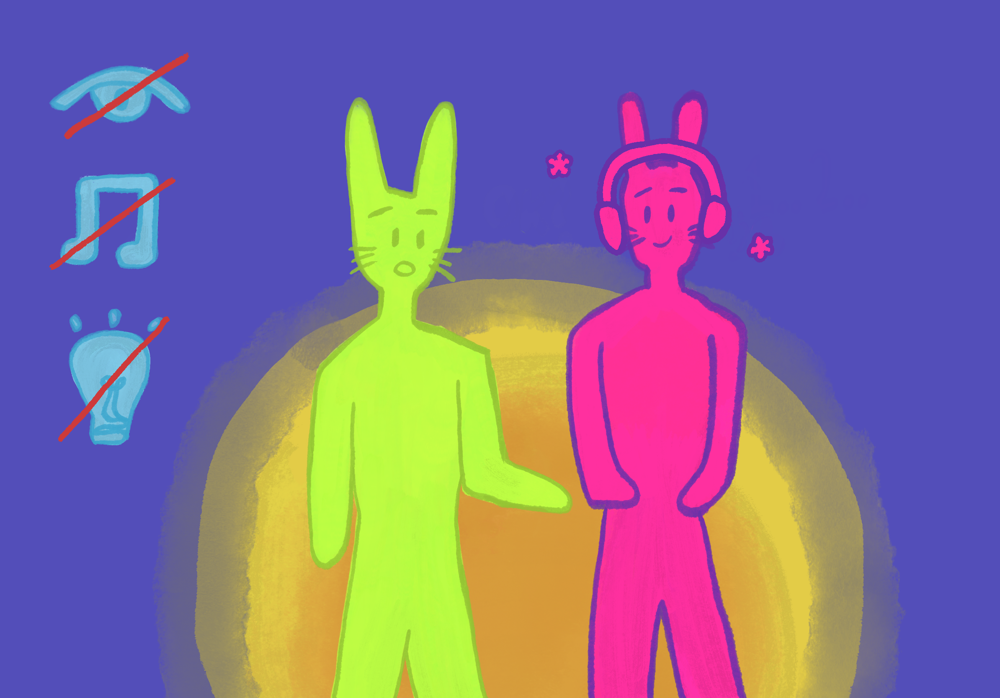
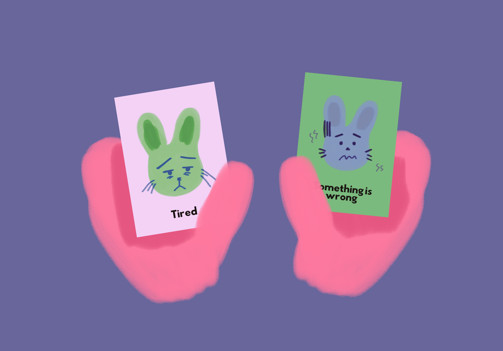

What You Can Do During a Meltdown
Meltdowns can be tricky to navigate on your own. Here are some steps to make the process of calming down better.
-

01Move to a lower-stimulation space
Find somewhere calmer and less crowded. This way you will have more room to both breathe and calm down.
-

02Use your sensory toolkit
Use your noise-cancelling headphones, fidget toys and/or weighted blanket to help calm yourself down.
-
 03
03Use the emotion cards
If someone is around to assist you and you are unable to respond, you may use the emotion cards to communicate how you are feeling in the moment.
-

04Don’t fight it, let it pass
Take as much time as you need to calm down. It is better to let the moment pass rather than fight it, as you will end up harming yourself if you do.
What You Can Do when Someone You Know Has a Meltdown
Sometimes, we may come across someone going through a meltdown. Here is how you can help:

01Anticipate the Meltdown
Autistic people tend to already show signs of distress before they go into meltdown mode. They can be akin to signs of anxiety such as pacing, repetitive questioning, rocking or becoming very still.

02Let them calm down
Allow them some time to calm down and regain their senses. You may introduce techniques like:
Breathing Exercise: Inhale slowly through nose for 4 counts, hold breath for 4 counts, exhale steadily for 4 counts.
5-4-3-2-1 Grounding Technique: Name:
- 5 things you can see
- 4 things you can touch
- 3 things you can hear
- 2 things you can smell
- 1 thing you can taste

03Ask them if they are okay.
Remember to be patient. Some of them may need more time to respond.

04Give and Create Space
Redirect them to a quiet, safe space if possible. Ask people to move on ahead and to not stare, switch off loud music, bring down bright lights. Reduce as much stimulation overload as possible.

05Use the Emotion Cards
If the emotion cards are on you or on the person experiencing a meltdown, you can use them to communicate.